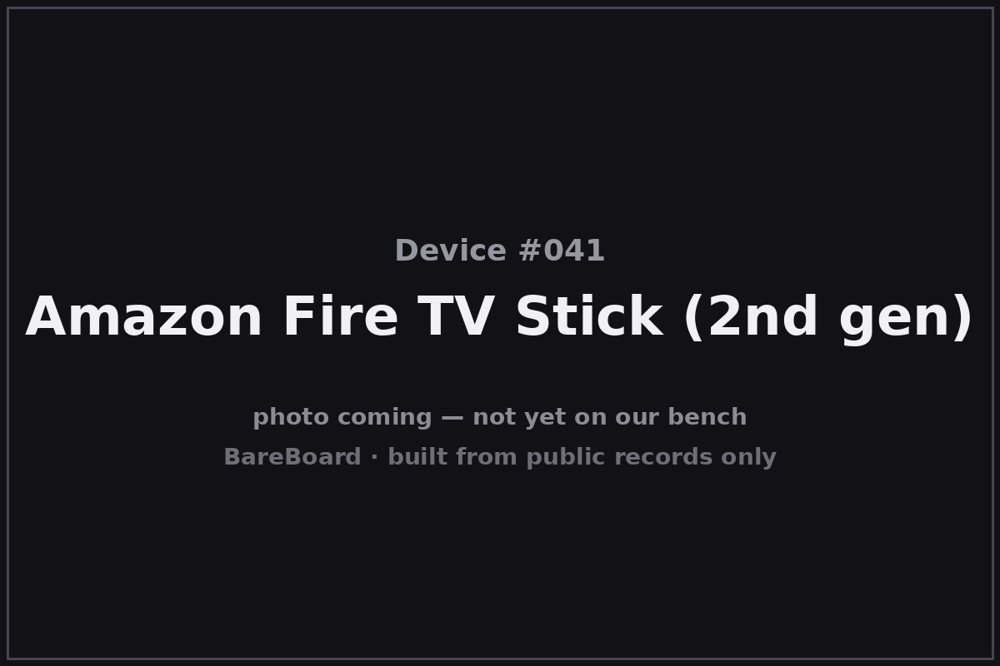

The Autopsy Report · Device #041
The Amazon Fire TV Stick (2nd Gen, 2016)
Forty dollars, one HDMI port, and a whole streaming war inside — the dongle that made ‘just plug it in’ the default answer to TV.
What is this thing?
The Amazon Fire TV Stick (2nd generation, 2016) is an HDMI streaming dongle: plug it into a TV's HDMI port, power it over USB, and it turns any screen into a Fire OS smart TV — 1080p video with HEVC, dual-band 802.11ac Wi-Fi, and Bluetooth for the Alexa voice remote. It launched at $40 and sold in the tens of millions, becoming the default “make my TV smart” answer. Geeky Gadgets (specs) FlatpanelsHD (review)
This is the 2016 second generation — not the 2014 original, and not the later 4K models. Its U.S. wireless authorization is FCC ID 2AE6S-0948, described in the grant as an “HDMI Digital Media Receiver.” FCC filing
Not on our bench (yet)
This device is not on our bench. We have never owned, opened, photographed, measured, or powered on the Fire TV Stick (2nd gen). Everything in this report comes from public records: government filings, manufacturer documents, manuals, and credible public teardowns and hardware databases. Where a fact would require holding the hardware in our hands — our own photos, our measurements, our boot logs, the exact board revision of a future unit — we say so, out loud, and mark it unknown. Nothing here is presented as first-hand BareBoard evidence.
That constraint is also the point: you can learn a remarkable amount about a device without ever touching it, because the public record is deep. What follows is everything the record could tell us — and an honest map of where the record runs out.
A short history
- 2016-09-14The FCC grants equipment authorization 2AE6S-0948 to Amazon.com, Inc. for the “HDMI Digital Media Receiver” — the 2nd-gen Fire TV Stick. FCC filing
- 2016-10The 2nd-gen Stick launches at $40: quad-core SoC, 802.11ac, HEVC 1080p, Alexa voice remote — a large step up from the 2014 original. Geeky Gadgets FlatpanelsHD
- 2016–2018The Stick becomes the best-selling streaming device in its class; Amazon's forum staff confirm the factory-reset path for the 2nd generation in support threads. Amazon forum (staff)
The outside
A black plastic stick about the size of a pack of gum: HDMI plug on one end, micro-USB power on the side, and a single LED. It hangs off the back of the TV, usually out of sight — the whole point is that the hardware disappears and only the interface remains. The Alexa voice remote (Bluetooth) is the part you actually touch. Geeky Gadgets

Forty dollars of deliberate invisibility: no vents to photograph, no ports to map, no switches at all.
The board
Here's the honest version for the board section too: no confirmed public internal photos of the 2nd-gen Stick were located in the accessible record, and no verified source names the exact board layout or debug interfaces. The public spec record — widely reported at launch and consistent across reviews — describes a MediaTek MT8127D quad-core 1.3 GHz SoC with Mali-450 MP4 graphics, 1 GB of RAM, and 8 GB of storage. Geeky Gadgets FlatpanelsHD
That spec attribution is Likely, not Confirmed: it's the consensus of the launch press, not a primary hardware source. Board layout, flash/RAM part numbers, and debug interfaces are unknown until a unit reaches a bench.
Under the microscope: the chips
What the public record says is inside the 2nd-gen Stick. The chipset attribution is launch-press consensus — badged honestly as Likely.
| Chip | What it does | How we know | Dig deeper |
|---|---|---|---|
| MediaTek MT8127D | The application processor — quad-core 1.3 GHz with Mali-450 MP4 graphics, per the launch spec record. | Likely Widely reported at launch and consistent across reviews; no primary hardware source located. | Geeky Gadgets |
| RAM: 1 GB | Working memory. | Likely Launch spec record; no primary hardware source located. | FlatpanelsHD |
| Storage: 8 GB | App and system storage. | Likely Launch spec record; no primary hardware source located. | FlatpanelsHD |
No confirmed internal photos, no exact board layout, no verified debug interface, no part markings. This is the thinnest board section in the batch, and it says so.
The government's file on this box
The government's file on this dongle is public under FCC ID 2AE6S-0948, granted to Amazon.com, Inc. on September 14, 2016, described as an “HDMI Digital Media Receiver.” FCC filing
- Lab power figures (filing-specific): conducted outputs around 99.5/99.8 mW in 5 GHz and 532.1 mW at 2.4 GHz, plus lower Bluetooth figures — each tied to its own grant.
- Radios: dual-band 802.11ac Wi-Fi plus Bluetooth 4.1 (for the voice remote).
Browse it yourself: filing page
Service, recovery, and debug modes
We listen, we don't knock: this section documents only that service or recovery modes exist in the public record, and what kind of thing they are — never how to defeat a lock.
Amazon's own forum staff confirm a factory-reset path for the 2nd-generation Stick — a manufacturer-supported recovery mode whose purpose is erasing user data and restoring defaults. Amazon forum (staff) Existence and purpose only; no button-procedure detail reproduced here.
We found no public record of a serial console, bootloader mode, or other debug interface for this device. Unknown until a bench says otherwise.
What the public record shows
The dongle ate the set-top box. The 2nd-gen Stick's public record — $40, 1080p HEVC, voice remote, tens of millions sold — marks the moment streaming hardware became disposable-priced. The hardware got so cheap it stopped being the product; the store and the subscription became the product.
Invisibility is a design choice. No vents, no ports, no switches, no status display — the Stick is engineered to vanish behind the TV. That same invisibility is why the public hardware record is thin: there's almost nothing to photograph and nobody to photograph it for.
Thin record, stated plainly. This is the least-sourced board section in the batch: no confirmed internal photos, chipset on press consensus. We publish the gap instead of papering over it.
What we didn't do
- We never had a unit, so we took no photographs and no measurements.
- We never opened an enclosure or lifted an RF shield.
- We never captured a boot log or probed a debug port.
- We never extracted, modified, redistributed, or ran the device's firmware.
- We never defeated a lock, bypassed authentication, or recovered credentials or keys — and we publish none.
- We never tested an exploit or a vulnerability against any device.
- Anything below marked Unknown stays unknown until a unit reaches our bench.
By the numbers
- Device: Amazon Fire TV Stick (2nd generation, 2016)
- Era: 2016–2018
- FCC ID: 2AE6S-0948 (Amazon.com, Inc.; granted 2016-09-14; “HDMI Digital Media Receiver”)
- Wireless: Dual-band 802.11ac Wi-Fi + Bluetooth 4.1
- Conducted power (per filing): ~99.5/99.8 mW @ 5 GHz; ~532.1 mW @ 2.4 GHz
- Likely SoC: MediaTek MT8127D, quad-core 1.3 GHz, Mali-450 MP4
- Likely memory: 1 GB RAM; 8 GB storage
- Video: 1080p with HEVC
- Launch price: $40 USD
Words to know
Every term this page uses, in plain English. No prior knowledge required.
- HDMI dongle
- A self-contained computer in a stick that plugs straight into a TV's HDMI port.
- HEVC
- High Efficiency Video Coding — the compression standard that made 1080p streaming practical on modest bandwidth.
- Fire OS
- Amazon's Android-based operating system for Fire TV devices.
- Bluetooth remote
- The Stick's remote pairs over Bluetooth rather than infrared — no line-of-sight needed.
- Factory reset
- A manufacturer-supported mode that erases user data and restores the device to its out-of-box state.
- FCC ID
- The ID the FCC assigns to each approved wireless product. Punch it into fccid.io and the whole public filing comes up.
- FCC
- The Federal Communications Commission — the U.S. agency that regulates anything that transmits radio.
Sources & confidence
- FCC equipment authorization 2AE6S-0948 (grantee Amazon.com, Inc., grant 2016-09-14, “HDMI Digital Media Receiver”; conducted powers ~99.5/99.8 mW @ 5 GHz, ~532.1 mW @ 2.4 GHz, plus Bluetooth): primary evidence. High confidence.
- Launch specs (MT8127D quad-core 1.3 GHz, Mali-450 MP4, 1 GB RAM, 8 GB storage, 1080p HEVC, dual-band 802.11ac, Bluetooth 4.1, $40): Geeky Gadgets and FlatpanelsHD launch coverage. Medium confidence — press consensus, not primary hardware evidence.
- Factory-reset existence (2nd gen): Amazon forum staff reply. High confidence in the existence claim; no procedure reproduced.
- No confirmed public internal photos, board layout, or debug-interface record was located; stated as gaps.
Anything not listed here is unknown until the bench says otherwise. We'll say so, out loud, when that's the case.
Legal note. BareBoard is an educational project. This page is built entirely from public records — government filings, manufacturer documents, and published third-party research — about hardware we have never possessed. We don't publish, host, or distribute firmware, keys, passwords, or credentials, and nothing here is instructions for defeating a lock or an authentication check. Product names and trademarks belong to their respective owners and appear here only to identify the hardware. If you believe anything here infringes your rights, contact us and we'll address it promptly.